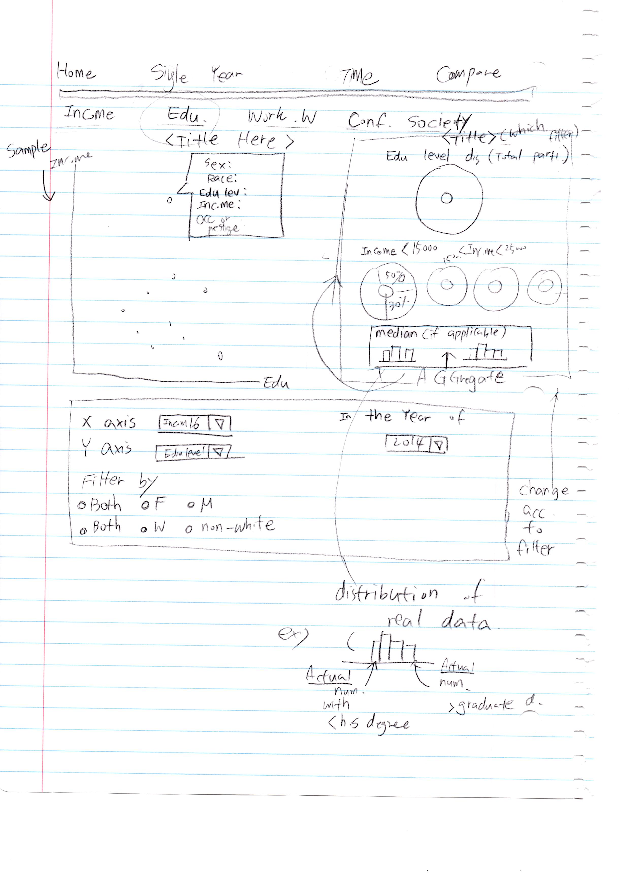
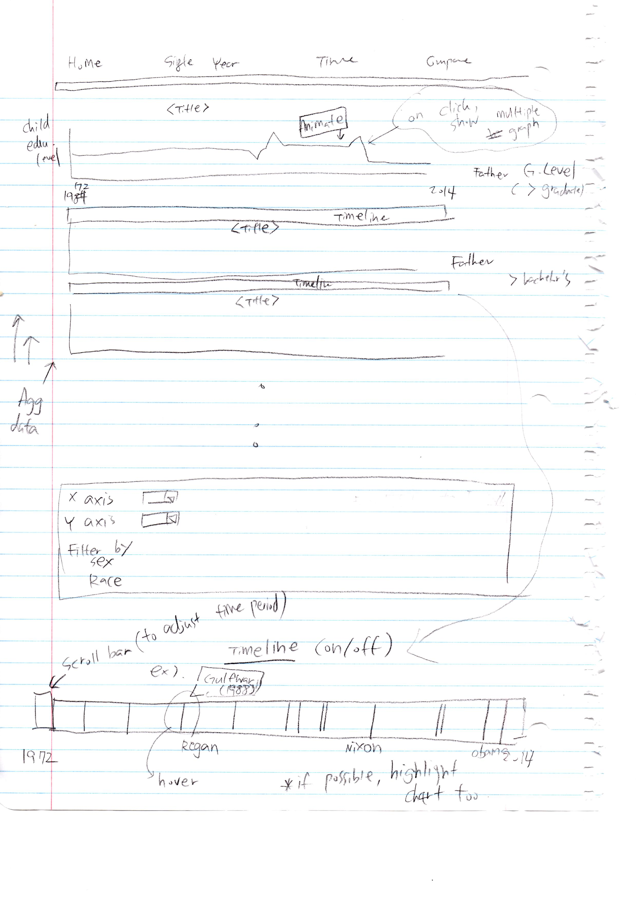
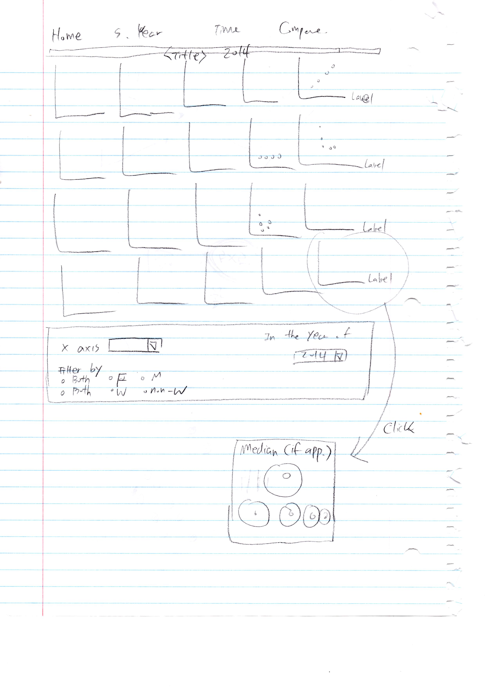
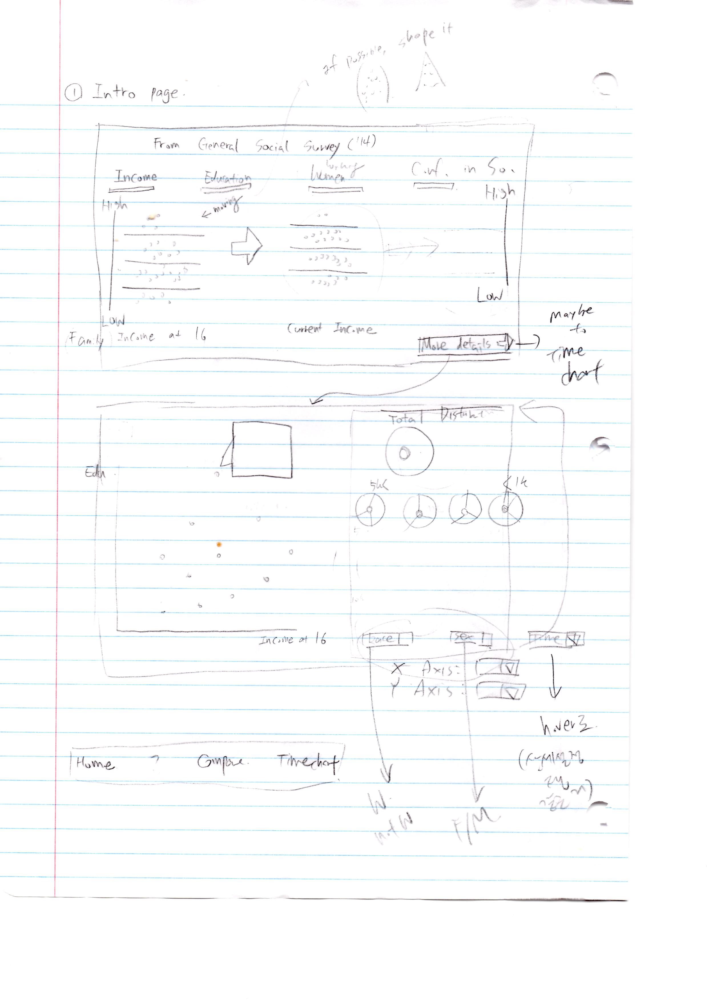

For this project, I used a dataset from General Social Survey (1972-2014), conducted by National Opinion Research Center. I planned to have parts in visualization that can appeal to both researchers who are interested in retrieving certain information—who know what they are looking for—and more casual viewers who are exploring the data—who do not know what they may find. At the same time, I wanted to try new ways of visualization, other than displaying every data in scatterplots and bar charts I used in the former projects.
It took quite a time for me to start on designing process because dealing with the dataset was one of the biggest challenges in this project. The dataset was a csv file over 650MB. First, I decided to use data from every 4 year instead of 2 year, as the data was too huge and I thought 4-year period would still be able to show trend in time. Then I had to choose which variables to use, as there were more than 5000 variables. Because many of the variables were only used for a few years, I had to change my project plan as I could not use some of the variables I was planning to use. I wanted to show how the data changed with time, but the visualization was not going to be very meaningful if the variable only show data for a single year. Therefore, I decided to look for variables that are used in every year, or, at least most of the years. Then, among those comparatively frequently used variables, I selected variables that I thought are appropriate for scope and objective of the project. I started working on designing once I roughly figured out what variables I would be using in the visualization.
For the intro page, first of all, I wanted to present what kinds of data the users can expect to see in the other parts of visualization. I also wanted to make it interactive to attract attention. Moreover, this page functions as a small sized version of the relationship between variables the users can find in the other graphs that either utilized aggregated data or have bigger sample size. By having the dots rearrange itself, the visualization enables the user to form a rough assumption about the relationship between variables. As it is an intro page, I thought it would be better not to provide too much detailed information here.
The visualization in the intro page only shows data for the year of 2014. As I presumed the users would have formed some kind of hypotheses on the relationship between variables after interacting with the intro page, I thought the next step could be searching if the relationship only existed for 2014, or, if there had been any changes in the relationship over the years. The line chart shows how the relationship between one level of a variable—education level, income level, and so on—and one level of another variable has changed since 1972.
Moreover, the users can use a filter to only show data for certain sex or race. In regards to a graph showing a timeline, it was originally planned to be an interactive scroll bar, so that users can scroll to only show certain time period. Additionally, I was thinking of adding a function to highlight corresponding parts of each line graph when a user moves a mouse cursor over an event in a timeline.

Then I also wanted to create a page that compares relationship between each variable in one look, rather than a relationship of certain variables in different time period as in line graph above. As one of my objective in project proposal was exploring the relationship of the variables related to parents and the variables related to the responder, I thought I could use multiple scatterplots to display every variable I chose to use in the project side by side and make comparison. Although I did not go far enough to implement, I was considering showing detailed information about data shown in each scatterplot on mouse click. I wanted supplement the scatterplot with the aggregated data because both sampling and aggregation methods have their own limitations.
Finally, this is a sketch for one page I could not implement in visualization. Because other pages provides general information such as trends in time, I planned to use this page to show detailed information for a single year. It included information on distribution of a variable, for example, each income level in the total population who answered the survey in the pie chart. As the scatterplot on the left also uses sampled data, I was going to supplement with a bar chart that shows how each value of variable were distributed among all the responders.
In this visualization, the audience I had in mind were more casual viewers of data, who would like to see if there are any interesting trends or unexpected relationships between variables. Therefore, I focused more on showing relationships and enabling the users to try out different combinations of variables.
I have discovered several trends with the line graphs, but as I just realized I may have not normalized the data correctly, I am not quite sure if these findings are valid.
As expected, as the education level of the father went down, the education level with the responder also went down. At the same time, when father had not graduated high school, the number of responders who also did not finish high school is consistently moving down. There is quite a big difference in number for 1972 and in 2000s. It was also interesting that while the most common degree for responders whose father is holding at least a Bachelor’s degree is a Bachelor’s degree, the trend is a little different when one looks at black respondents only. When father is a college graduate, most of the responder graduated a high school, when most of the white responders graduated from a college. On the other hand, for other races, the largest number of responders whose father has a Bachelor’s degree graduated from a graduate school. Although it is not possible to see details inside “other” races, I think maybe the Asian responders are largely responsible for this difference considering Asian parents tend to value education very much.
One another interesting trend is that people tend to meet people with same level of education as their spouses. In every line graph, the largest number of people married the people who hold the same level of degree as they do.
Also, when the either of the parent’s education level was high, more responders disagreed with the traditional role of a husband and wife—a man working outside and a woman tending home—and agreed with the statement that a working mother can establish a warm and loving relationship as a mother who is a homemaker.
Sources http://www.freepik.com/free-icons/arrows (arrow icon) http://colorbrewer2.org/ (colors for scatterplot) Javascript Coding References Mozilla Developer Network (on how to use certain Javascript functions) bl.ocks.org(For moving dots in intro page scatterplots) Chained Transitions II Circles R Coding References Cookbook for R Quick-R Also referenced stackoverflow and W3schools when stuck at coding.